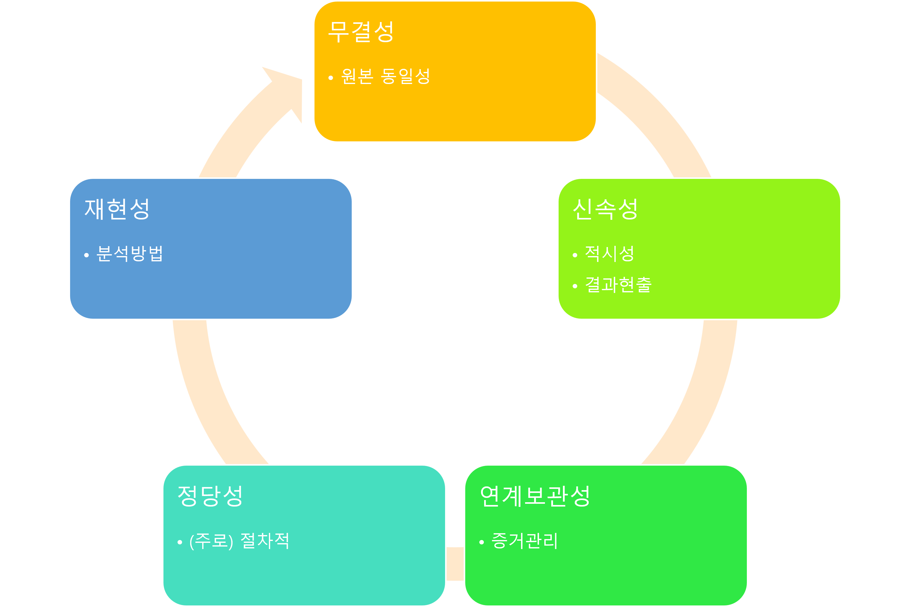
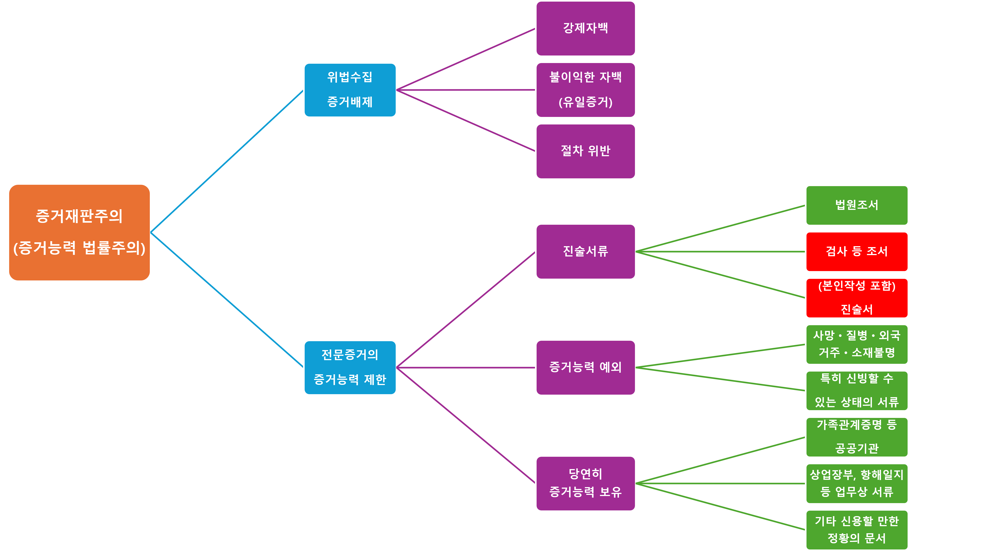
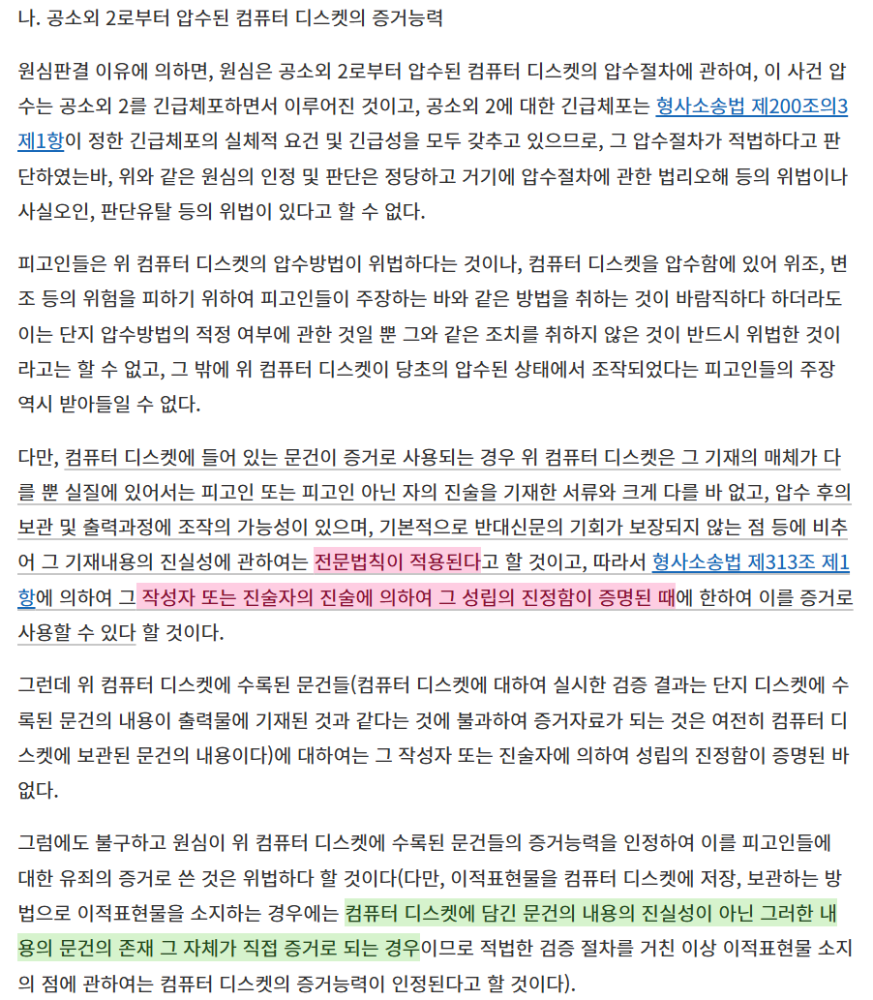
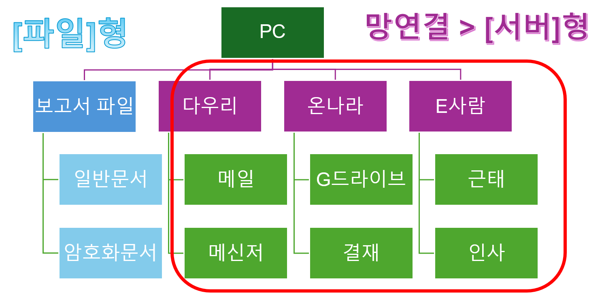
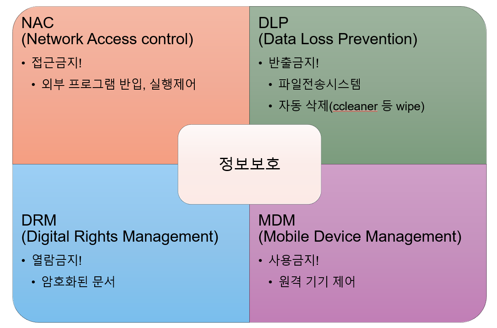
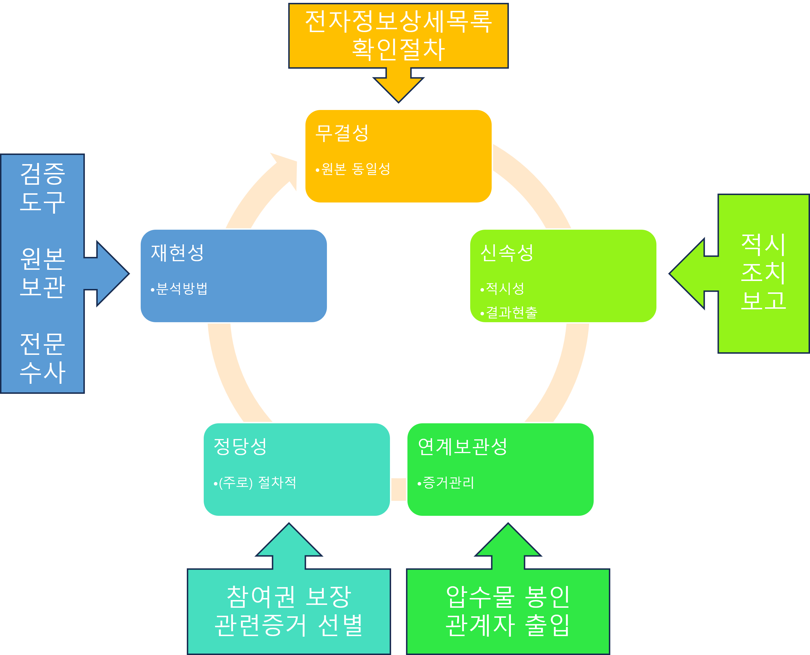
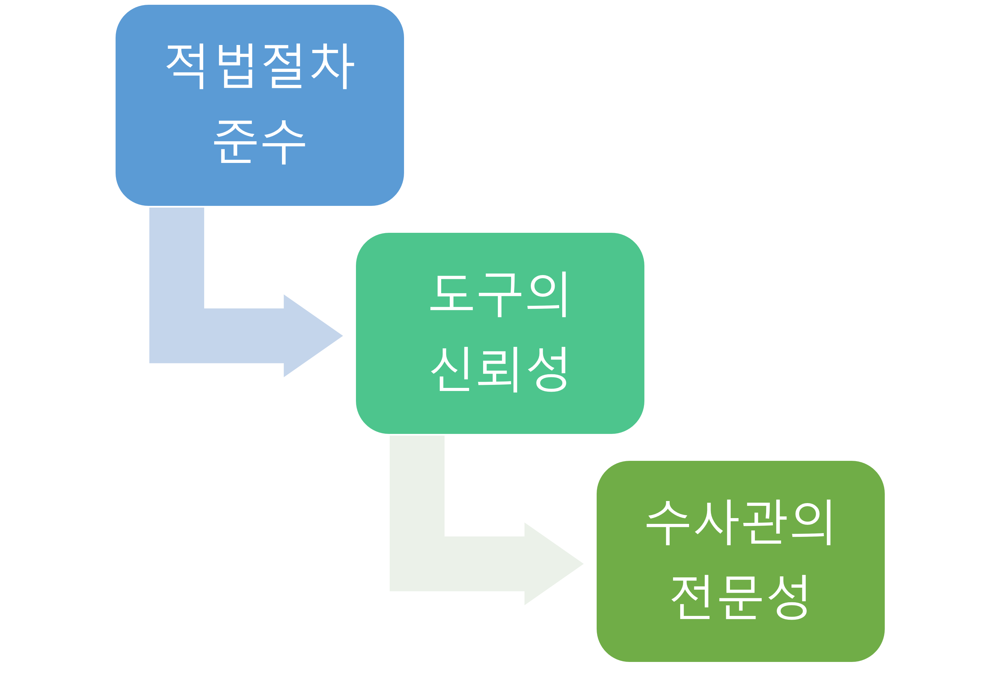
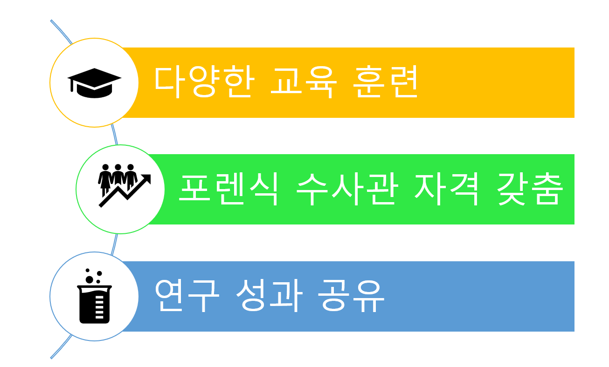
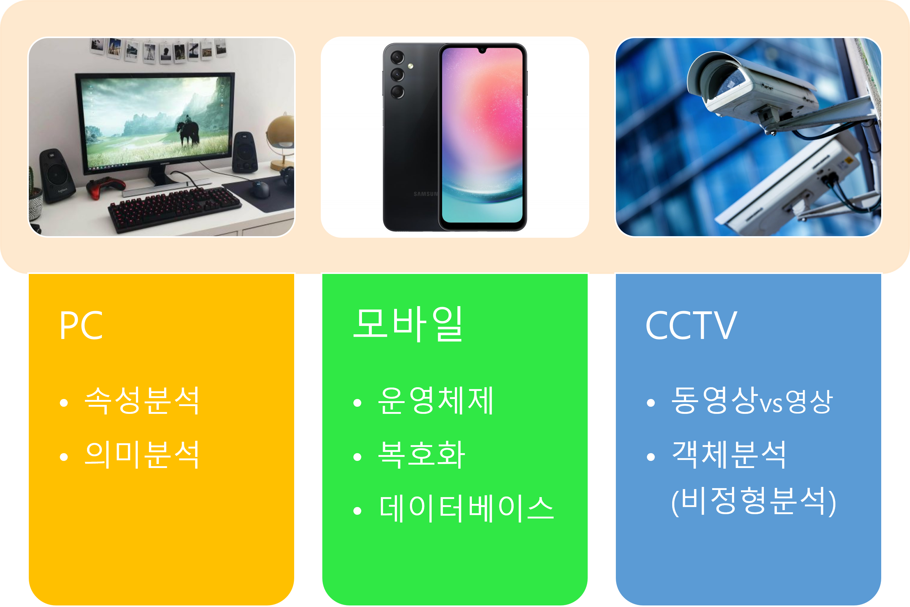

- 전문증거에 대해 이해한다
- 아티팩트에 대해 이해한다
Chapter
01
진술증거, 전문증거
The evidence of hearsay
피의자가 법정에서 직접 발언하지 않은 진술의 증거능력

| 진술서 |
| 타인의 발언을 기억한 발언 |
| 공판 이외 |

| 녹취록 | 본인작성 | 속기사 | 수사관 |
|---|---|---|---|
| 작성자 확인 | 가능(본인) | 가능(속기사) | 가능(수사관) |
| 작성자 의도 | 본인 의도 | 본인 대리 | 수사관 의도 |
| 증거능력 | 313조 (진술서 등) | 313조 (진술서 등) | 검증영장>검증조서 수사보고>증거x |
| 전문증거 여부 | o (본인의 공판 이외 발언) | o (녹취를 듣고 적은 것) | o (녹취를 듣고 적은 것) |
| 서명, 날인 여부 | 가능(본인) | 가능(속기사, 본인 등) | 어려움 |
| 피고인 발언 | 312조(수사 중) | 313조(일상적) |
|---|---|---|
| 예시 | 피의자 신문조서 등 수사기관 작성 | 문자,영상,음성+본인, 남이 써준 진술서 등 |
| 포렌식 관련 | 포렌식과 관계없이 부인하면 증거능력 상실 | 부인할 때 포렌식을 통해 증거로 삼을 수 있음 |
| 비고 | 참고인 발언은 영상 녹화 등을 병행하여 입증 가능 | 수사기관에서 본인 등이 작성, 제출한 진술서는 312조 |

| 구분 | 생성증거 | 보관증거 |
|---|---|---|
| 수사목적 | 사용자 행위 프로파일링 ㅇ 접속기록, 생성-삭제 행위 등 | 범죄관련 직,간접증거 ㅇ 범죄공모 대화, 계획문서 등 |
| 증거유형 | 동작 기록, 임시파일, 메타데이터 등의 활동 흔적 | 데이터베이스, 멀티미디어 등 컨텐츠 |
| 포렌식 기술 | 아티팩트 분석, 구조체 분석, 메타데이터 분석 등 | 시각화, 복호화, 분류, 검색 등 |
| 특징 | 분석의 일관성, 대량 용이성, 포렌식 전문성 | 접근용이성, 분석의 주관성, 사건 이해도 |






오늘 수업 내용의 참고자료는?
녹음테이프와 녹취록, 녹취진술의 증거능력에 대한 실무적 고찰(2021, 김정한, 영남대학교), 형사소송에서 증거로 활용되는 녹음파일 등에 관한 실무상 문제점에 대한 소고(2018, 김동원, 청주지원 판사), 수사기관의 정보보안솔루션 압수수색 방법 연구(2023, 이은정, 서울대학교) 등
질문을 환영합니다 · Q&A